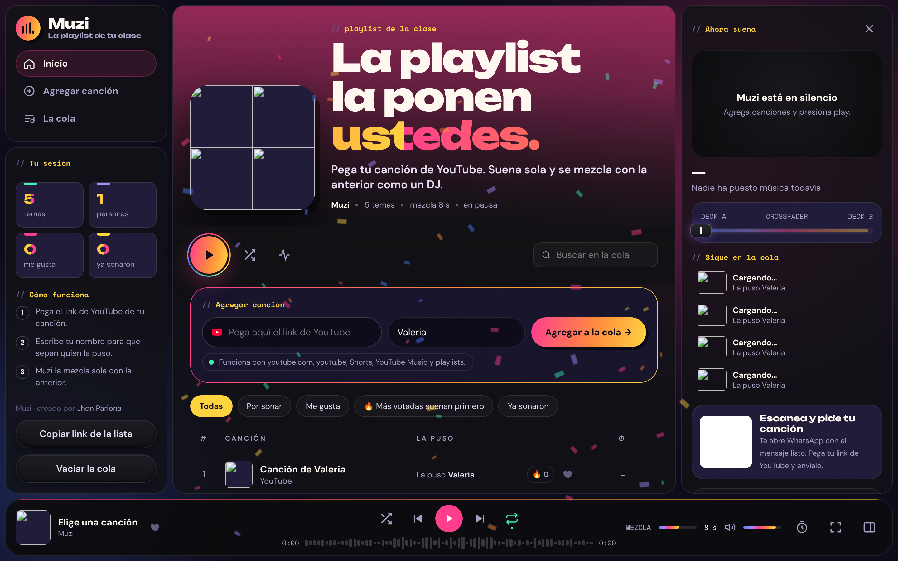

manual de marca · v1
la idea
En clase cada uno quiere poner su canción, pero nadie quiere estar pegado a la compu cambiando temas.
Los alumnos pegan links de YouTube. Muzi los pone en cola, los reproduce uno tras otro y los mezcla como un DJ.
Chicos y chicas de colegio y academia. Les gusta el movimiento, el color y sentir que la música es de ellos.
personalidad
Habla como ellos, sin ser infantil.
Todo se mueve, rebota y responde.
Cada canción lleva el nombre de quien la puso.
Pegar, enviar, listo. Nada de cuentas.
símbolo + nombre
El símbolo es un círculo con el degradado Atardecer y cuatro barras de ecualizador dentro. En la web las barras se mueven al ritmo de la música y se detienen en pausa.
La sombra dura (tipo sticker) se desplaza hacia abajo a la derecha. Es parte del logo: hace que Muzi se sienta como una pegatina en la laptop.
Símbolo solo · ícono, favicon
Sobre fondo claro
Sobre color (una tinta)
paleta
tres letras, tres trabajos
títulos
Aa
Ancha, redonda y con peso. Para el nombre Muzi, títulos grandes y números.
La playlist la ponen ustedes.
texto
Aa
Limpia y amable. Para botones, listas, descripciones y todo lo que se lee.
Pega tu canción de YouTube. Suena sola y se mezcla con la anterior.
datos
Aa
Para etiquetas, tiempos y datos técnicos. Siempre en minúscula con "//" delante.
// ahora suena
2:41 · mezcla 8 s
formas
movimiento
Si el equipo tiene activado "reducir movimiento", Muzi se queda quieto.
cómo habla Muzi

La web de Muzi aplicando la marca: fondo Noche, títulos Unbounded, botón Atardecer con sombra sticker, etiquetas en Space Mono.